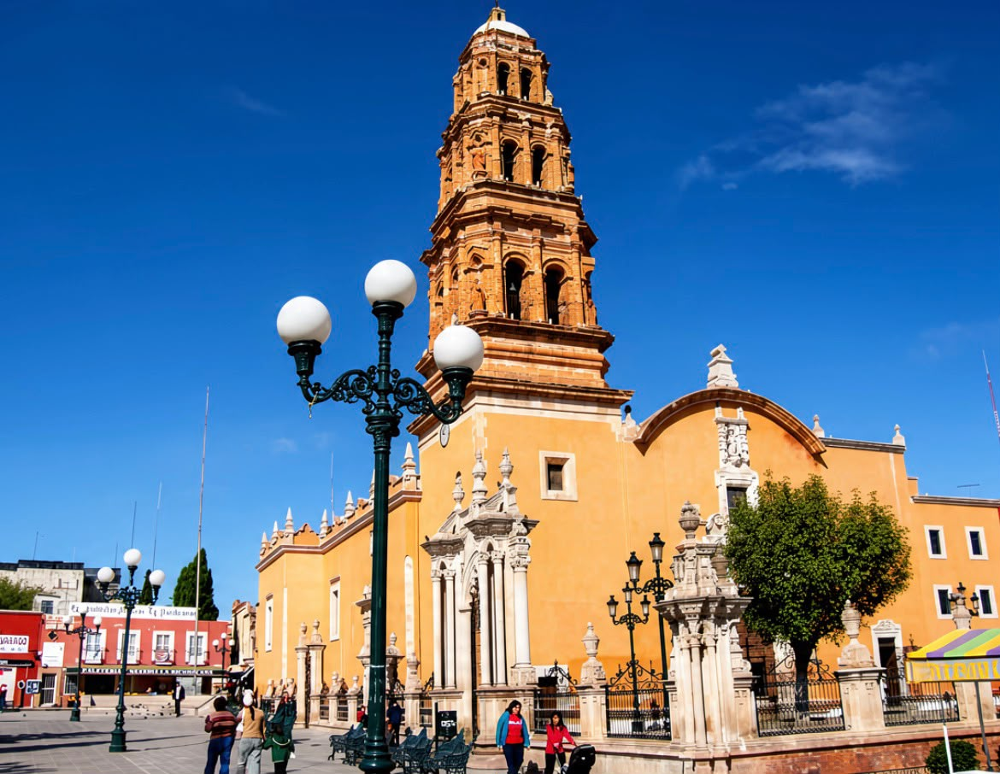

⛪ Historia
El Templo de la Purificación es uno de los edificios religiosos más representativos del centro histórico de Fresnillo y forma parte del patrimonio arquitectónico de la ciudad.
Su historia se remonta a la época virreinal. El templo actual fue levantado durante el siglo XVIII y constituye uno de los principales testimonios del desarrollo histórico y religioso que experimentó Fresnillo durante ese periodo.
A lo largo de los años, el templo ha permanecido como un punto de referencia para los habitantes de Fresnillo y como parte importante de la imagen urbana del centro de la ciudad.
Su arquitectura, sus elementos religiosos y su ubicación hacen del Templo de la Purificación uno de los sitios de interés histórico y cultural que pueden conocerse al recorrer Fresnillo.
💡 Datos interesantes
⛪ Es uno de los templos históricos de Fresnillo: su presencia forma parte de la historia religiosa y arquitectónica de la ciudad desde la época virreinal.
📜 Sus orígenes se remontan varios siglos atrás: el desarrollo del templo está relacionado con el crecimiento de Fresnillo durante el periodo colonial.
🏛️ Forma parte del patrimonio arquitectónico local: su fachada y sus espacios interiores conservan elementos que reflejan distintas etapas de la historia del inmueble.
📍 Se encuentra en una zona histórica de la ciudad: su ubicación permite integrarlo fácilmente a un recorrido por otros sitios representativos del centro de Fresnillo.
🙏 Sigue teniendo una función religiosa: además de su importancia histórica y turística, continúa siendo un espacio de culto para la comunidad.
📸 Galería



📍 Visita el Templo de la Purificación
Conoce personalmente uno de los templos históricos más representativos de Fresnillo, Zacatecas.
Ver ubicación en Google Maps